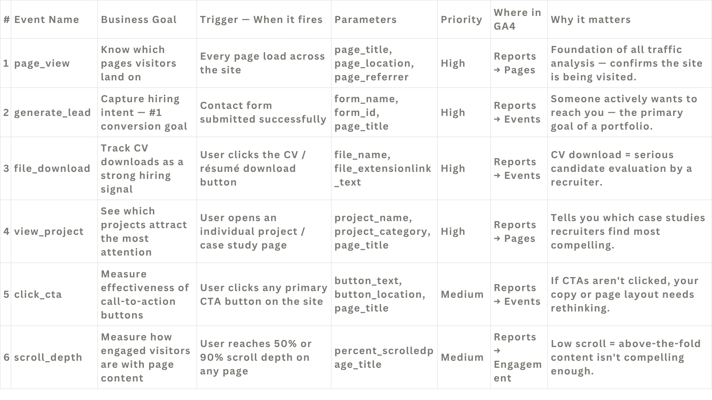
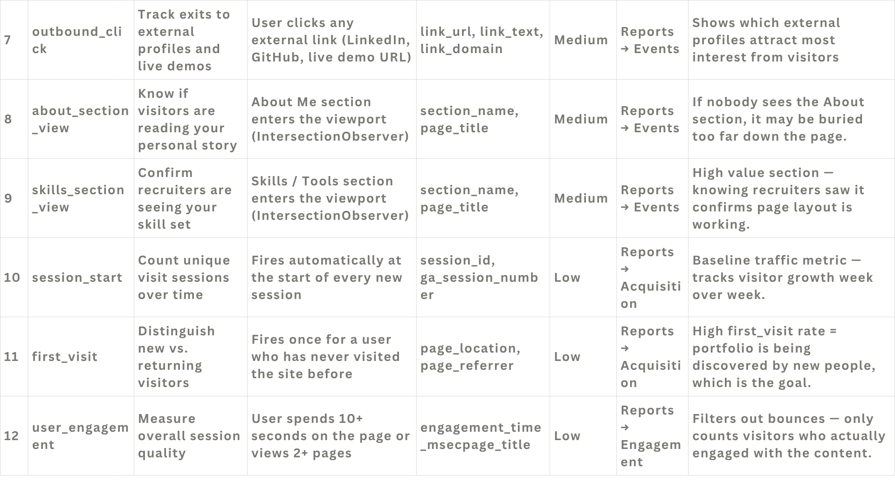
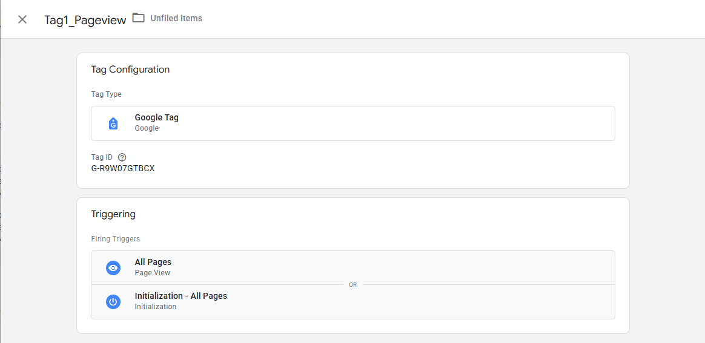
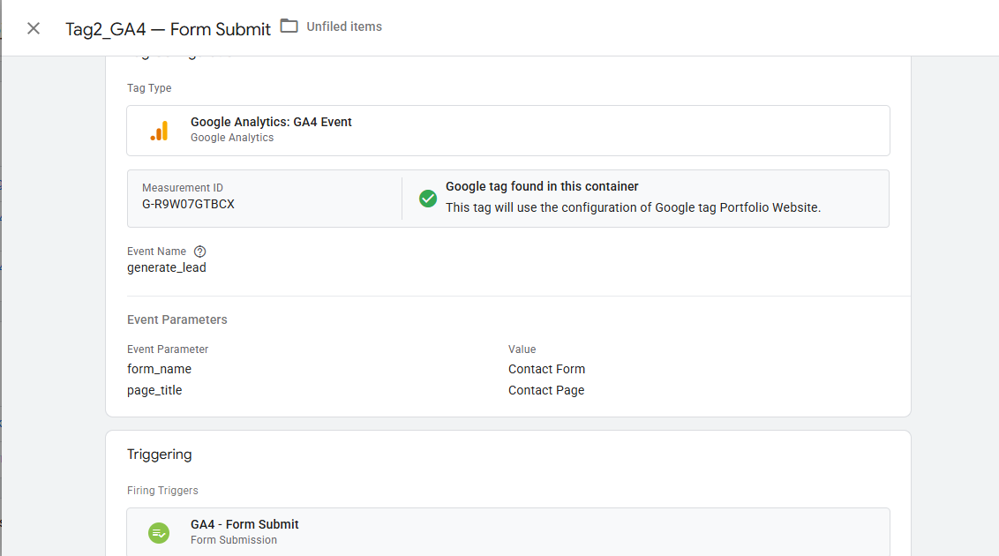
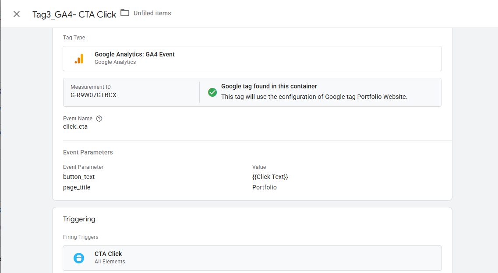
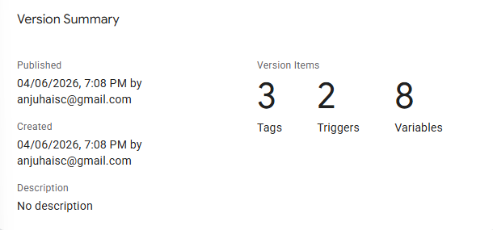

GTM & GA4 Event Tracking Implementation
For this project, I built a complete analytics tracking system for a portfolio website from scratch, without touching any website code. Using Google Tag Manager and Google Analytics 4, I went from zero tracking to a fully published, version-controlled measurement setup.
Project summary
Tools used: Google Tag Manager · Google Analytics 4 · Canva · GitHub
Project type: Analytics implementation · Event tracking · QA + publishing
Planning before building
Before writing a single tag, I created a 12-event measurement plan mapping each business goal to a specific GA4 event, trigger,
and set of parameters. This step forced clarity. For example, a generate_lead event firing on form submission tells a recruiter
that someone took direct hiring action, while file_download tracks CV engagement.
Defining the why behind each event upfront made the implementation fast and organised.
Measurement plan (visual)



Building the tags in GTM
With the plan defined, I set up a GTM container and built 3 tags covering the core user journeys.
The first was a Google Tag (GA4 Page View) connected to my GA4 Measurement ID G-R9W07GTBCX,
firing on every page load via an All Pages trigger.
The second was a GA4 Event tag (GA4 Form Submit) tracking the generate_lead event with custom parameters (form_name
and page_title), firing only when a contact form is submitted.
The third was another GA4 Event tag (GA4 CTA Click) tracking the click_cta event with button_text
and page_title parameters, firing on button clicks.
Tag configurations (screenshots)


generate_lead) with custom parameters.
click_cta) with click text + page title parameters.QA and publishing
Before publishing, I validated the workspace directly in GTM, resolving variable errors and confirming each tag had the correct trigger and parameters. The container was then published as Version 2, creating a permanent record of the full implementation with 3 tags, 2 triggers, and 8 variables live.


What this project taught me
Working through this end-to-end taught me that GTM and GA4 are fundamentally different tools. One deploys tracking, the other stores and analyses it, and confusing the two is one of the most common mistakes in analytics setups.
I also learned that built-in GTM variables are off by default and must be manually enabled, and that measurement planning before implementation is what separates a clean analytics setup from a messy one. Publishing with version control means any change is reversible, which is a critical habit in real client work.